Outline
- Concepts of Dynamic Multithreading
- Modeling and Measuring Dynamic Multithreading
- Analysis of Multithreaded Algorithms
- Example: Matrix Multiplication
- Example: Merge Sort
Concepts of Dynamic Multithreading
Parallel Machines are getting cheaper and in fact are now ubiquitous …
- supercomputers: custom architectures and networks
- computer clusters with dedicated networks (distributed memory)
- multi-core integrated circuit chips (shared memory)
- GPUs (graphics processing units)
Dynamic Multithreading
Static threading: abstraction of virtual processors. But rather than managing threads explicitly, our model is dynamic multithreading in which programmers specify opportunities for parallelism and a concurrency platform manages the decisions of mapping these to static threads (load balancing, communication, etc.).
Concurrency Constructs:
Three keywords are added, reflecting current parallel-computing practice:
- parallel: add to loop construct such as
forto indicate each iteration can be executed in parallel. - spawn: create a parallel subprocess, then keep executing the current process (parallel procedure call).
- sync: wait here until all active parallel threads created by this instance of the program finish.
These keywords specify opportunities for parallelism without affecting whether the corresponding sequential program obtained by removing them is correct. We exploit this in analysis.
Example: Parallel Fibonacci
For illustration, we take a really slow algorithm and make it parallel. (There are much better ways to compute Fibonacci numbers.) Here is the definition of Fibonacci numbers:
F0 = 0.
F1 = 1.
F_i_ = F_i-1_ + F_i-2, for _i ≥ 2.
Here is a recursive non-parallel algorithm for computing Fibonacci numbers modeled on the above definition, along with its recursion tree:
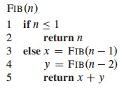 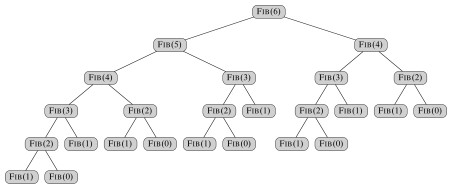
Fib has recurrence relation T(n) = T(n - 1) + T(n - 2) + Θ(1), which has the solution T(n) = Θ(F_n) (see the text for substitution method proof). This grows exponentially in _n, so it’s not very efficient. (A straightforward iterative algorithm is much better.)
Noticing that the recursive calls operate independently of each other, let’s see what improvement we can get by computing the two recursive calls in parallel. This will illustrate the concurrency keywords and also be an example for analysis:
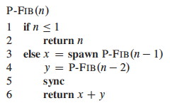
Notice that without the keywords it is still a valid serial program.
Logical Parallelism: The spawn keyword does not force parallelism: it just says that it is permissible. A scheduler will make the decision concerning allocation to processors.
However, if parallelism is used, sync must be respected. For safety, there is an implicit sync at the end of every procedure.
We will return to this example when we analyze multithreading.
Scheduling
Scheduling parallel computations is a complex problem: see the text for some theorems concerning the performance of a greedy centralized scheduler (i.e., one that has information on the global state of computation, but must make decisions on-line rather than in batch).
Professor Henri Casanova does research in this area, and would be an excellent person to talk to if you want to get involved.
Modeling and Measuring Dynamic Multithreading
First we need a formal model to describe parallel computations.
A Model of Multithreaded Execution
We will model a multithreaded computation as a computation dag (directed acyclic graph) G = (V, E); an example for P-Fib(4) is shown:
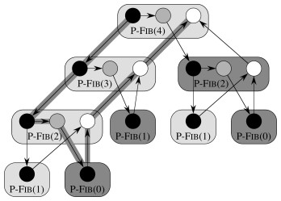
Vertices in V are instructions, or strands = sequences of non-parallel instructions.
Edges in E represent dependencies between instructions or strands: (u, v) ∈ E means u must execute before v.
- Continuation Edges (u, v) are drawn horizontally and indicate that v is the successor to u in the sequential procedure.
- Call Edges (u, v) point downwards, indicating that u called v as a normal subprocedure call.
- Spawn Edges (u, v) point downwards, indicating that u spawned v in parallel.
- Return edges point upwards to indicate the next strand executed after returning from a normal procedure call, or after parallel spawning at a sync point.
A strand with multiple successors means all but one of them must have spawned. A strand with multiple predecessors means they join at a sync statement.
If G has a directed path from u to v they are logically in series; otherwise they are logically parallel.
We assume an ideal parallel computer with sequentially consistent memory, meaning it behaves as if the instructions were executed sequentially in some full ordering consistent with orderings within each thread (i.e., consistent with the partial ordering of the computation dag).
Performance Measures
We write T__P to indicate the running time of an algorithm on P processors. Then we define these measures and laws:
Work
**T_1** = the total time to execute an algorithm on one processor. This is called _work in analogy to work in physics: the total amount of computational work that gets done.
An ideal parallel computer with P processors can do at most P units of work in one time step. So, in T__P time it can do at most P⋅T__P work. Since the total work is T_1, _P⋅T__P ≥ _T_1, or dividing by P we get the work law:
T__P ≥ T_1 / _P
The work law can be read as saying that the speedup for P processors can be no better than the time with one processor divided by P.
Span
T∞ = the total time to execute an algorithm on an infinite number of processors (or, more practically speaking, on just as many processors as are needed to allow parallelism wherever it is possible).
T∞ is called the span because it corresponds to the longest time to execute the strands along any path in the computation dag (the biggest computational span across the dag). It is the fastest we can possibly expect – an Ω bound – because no matter how many processors you have, the algorithm must take this long.
Hence the span law states that a P-processor ideal parallel computer cannot run faster than one with an infinite number of processors:
T__P ≥ T∞
This is because at some point the span will limit the speedup possible, no matter how many processors you add.
What is the work and span of the computation dag for P-Fib shown?
Speedup
The ratio T_1 / _T__P defines how much speedup you get with P processors as compared to one.
By the work law, T__P ≥ T_1 / _P, so T_1 / _T__P ≤ P: one cannot have any more speedup than the number of processors.
This is important: parallelism provides only constant time improvements (the constant being the number of processors) to any algorithm! Parallelism cannot move an algorithm from a higher to lower complexity class (e.g., exponential to polynomial, or quadratic to linear). Parallelism is not a silver bullet: good algorithm design and analysis is still needed.
When the speedup T_1 / _T__P = Θ(P) we have linear speedup, and when T_1 / _T__P = P we have perfect linear speedup.
Parallelism
The ratio T_1 / _T∞ of the work to the span gives the potential parallelism of the computation. It can be interpreted in three ways:
- _Ratio _: The average amount of work that can be performed for each step of parallel execution time.
- _Upper Bound _: the maximum possible speedup that can be achieved on any number of processors.
- Limit: The limit on the possibility of attaining perfect linear speedup. Once the number of processors exceeds the parallelism, the computation cannot possibly achieve perfect linear speedup. The more processors we use beyond parallelism, the less perfect the speedup.
This latter point leads to the concept of parallel slackness,
(T_1 / _T∞) / P = T_1 / (_P⋅T∞),
the factor by which the parallelism of the computation exceeds the number of processors in the machine. If slackness is less than 1 then perfect linear speedup is not possible: you have more processors than you can make use of. If slackness is greater than 1, then the work per processor is the limiting constraint and a scheduler can strive for linear speedup by distributing the work across more processors.
What is the parallelism of the computation dag for P-Fib shown previously? What are the prospects for speedup at *this* n? What happens to work and span as n grows?
Analysis of Multithreaded Algorithms
Analyzing work is simple: ignore the parallel constructs and analyze the serial algorithm. For example, the work of P-Fib(n) is T1(n) = T(n) = Θ(F_n). Analyzing _span requires more work.
Analyzing Span
If in series, the span is the sum of the spans of the subcomputations. (This is similar to normal sequential analysis.)
If in parallel, the span is the maximum of the spans of the subcomputations. (This is where analysis of multithreded algorithms differs.)

Returning to our example, the span of the parallel recursive calls of P-Fib(n) is:
T∞ (n) = max(T∞(n−1), T∞ (n−2)) + Θ(1)
= T∞(n−1) + Θ(1).
which has solution Θ(n).
The parallelism of P-Fib(n) in general (not the specific case we computed earlier) is T1(n) / T∞ = Θ(F_n/_n), which grows dramatically, as F_n_ grows much faster than n.
There is considerable parallel slackness, so above small n there is potential for near perfect linear speedup: there is likely to be something for additional processors to do.
Parallel Loops
So far we have used spawn, but not the parallel keyword, which is used with loop constructs such as for. Here is an example.
Suppose we want to multiply an n x n matrix A = (a__ij) by an n- vector x = (x__j). This yields an n-vector y = (y__i) where:
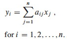
The following algoirthm does this in parallel:
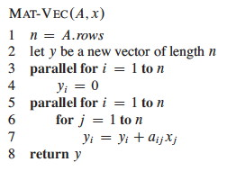
The parallel for keywords indicate that each iteration of the loop can be executed concurrently. (Notice that the inner for loop is not parallel; a possible point of improvement to be discussed.)
Implementing Parallel Loops
It is not realistic to think that all n subcomputations in these loops can be spawned immediately with no extra work. (For some operations on some hardware up to a constant n this may be possible; e.g., hardware designed for matrix operations; but we are concerned with the general case.) How might this parallel spawning be done, and how does this affect the analysis?
This can be accomplished by a compiler with a divide and conquer approach, itself implemented with parallelism. The procedure shown below is called with Mat-Vec-Main-Loop(A, x, y, n, 1, n). Lines 2 and 3 are the lines originally within the loop.
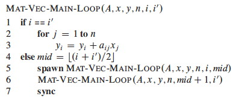 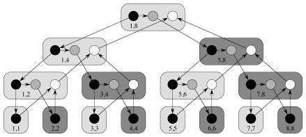
The computation dag is also shown. It appears that a lot of work is being done to spawn the n leaf node computations, but the increase is not asymptotic.
The work of Mat-Vec is T1(n) = Θ(_n_2) due to the nested loops in 5-7.
Since the tree is a full binary tree, the number of internal nodes is 1 fewer than the leaf nodes, so this extra work is also Θ(n).
So, the work of recursive spawning contributes a constant factor when amortized across the work of the iterations.
However, concurrency platforms sometimes coarsen the recursion tree by executing several iterations in each leaf, reducing the amount of recursive spawning.
The span is increased by Θ(lg n) due to the tree. In some cases (such as this one), this increase is washed out by other dominating factors (e.g., the doubly nested loops).
Nested Parallelism
Returning to our example, the span is Θ(n) because even with full utilization of parallelism the inner for loop still requires Θ(n). Since the work is Θ(n_2) the parallelism is Θ(_n). Can we improve on this?
Perhaps we could make the inner for loop parallel as well? Compare the original to this revised version:
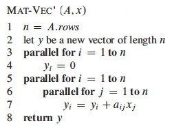
Would it work? We need to introduce a new issue …
Race Conditions
Deterministic algorithms do the same thing on the same input; while ** nondeterministic** algorithms may give different results on different runs.
The above Mat-Vec’ algorithm is subject to a potential problem called a determinancy race: when the outcome of a computation could be nondeterministic (unpredictable). This can happen when two logically parallel computations access the same memory and one performs a write.
Determinancy races are hard to detect with empirical testing: many execution sequences would give correct results. This kind of software bug is consequential: Race condition bugs caused the Therac-25 radiation machine to overdose patients, killing three; and caused the North American Blackout of 2003.
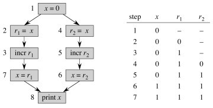
For example, the code shown below might output 1 or 2 depending on the order in which access to x is interleaved by the two threads:
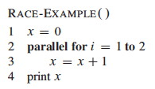
After we understand that simple example, let’s look at our matrix-vector example again:
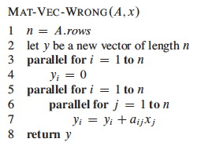
Example: Matrix Multiplication
Multithreading the basic algorithm
Here is an algorithm for multithreaded matrix multiplication, based on the T1(n) = Θ(_n_3) algorithm:
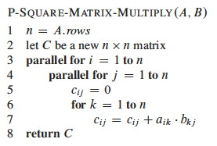
_How does this procedure compare to MAT-VEC-WRONG? Is is also subject to a race condition? Why or why not? _
The span of this algorithm is T∞(n) = Θ(n), due to the path for spawning the outer and inner parallel loop executions and then the n executions of the innermost for loop. So the parallelism is T1(n) / T∞(n) = Θ(n_3) / Θ(_n) = Θ(_n_2)
Could we get the span down to Θ(1) if we parallelized the inner for with parallel for?
Multithreading the divide and conquer algorithm
Here is a parallel version of the divide and conquer algorithm from Chapter 4:
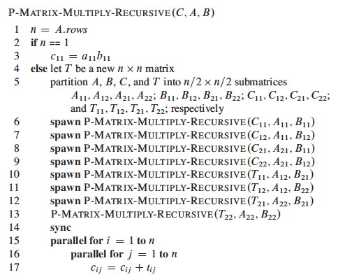
See the text for analysis, which concludes that the work is Θ(n_3), while the span is Θ(lg2_n). Thus, while the work is the same as the basic algorithm the parallelism is Θ(n_3) / Θ(lg2_n), which makes good use of parallel resources.
Example: Merge Sort
Divide and conquer algorithms are good candidates for parallelism, because they break the problem into independent subproblems that can be solved separately. We look briefly at merge sort.
Parallelizing Merge-Sort
The dividing is in the main procedure MERGE-SORT, and we can parallelize it
by spawning the first recursive call:
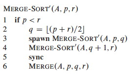
MERGE remains a serial algorithm, so its work and span are Θ(n) as before.
The recurrence for the work MS’1(n) of MERGE-SORT' is the same as the
serial version:
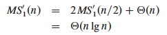
The recurrence for the span MS’∞(n) of MERGE-SORT' is based on the fact
that the recursive calls run in parallel, so there is only one n/2 term:
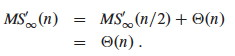
The parallelism is thus MS’1(n) / MS’∞(n) = Θ(n lg n / n) = Θ(lg n).
This is low parallelism, meaning that even for large input we would not
benefit from having hundreds of processors. How about speeding up the serial
MERGE?
Parallelizing Merge
MERGE takes two sorted lists and steps through them together to construct a
single sorted list. This seems intrinsically serial, but there is a clever way
to make it parallel.
A divide-and-conquer strategy can rely on the fact that they are sorted to break the lists into four lists, two of which will be merged to form the head of the final list and the other two merged to form the tail.
To find the four lists for which this works, we
- Choose the longer list to be the first list, T[_p_1 .. _r_1] in the figure below.
- Find the middle element (median) of the first list (x at _q_1).
- Use binary search to find the position (_q_2) of this element if it were to be inserted in the second list T[_p_2 .. _r_2].
- Recursively merge * The first list up to just before the median T[_p_1 .. _q_1-1] and the second list up to the insertion point T[_p_2 .. _q_2-1]. * The first list from just after the median T[_q_1+1 .. _r_1] and the second list after the insertion point T[_q_2 .. _r_2].
- Assemble the results with the median element placed between them, as shown below.
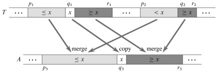
The text presents the BINARY-SEARCH pseudocode and analysis of Θ(lg n)
worst case; this should be review for you. It then assembles these ideas into
a parallel merge procedure that merges into a second array Z at location _p_3
(_r_3 is not provided as it can be computed from the other parameters):
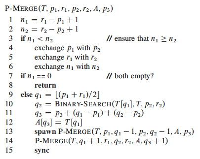
Analysis
My main purpose in showing this to you is to see that even apparently serial algorithms sometimes have a parallel alternative, so we won’t get into details, but here is an outline of the analysis:
The span of P-MERGE is the maximum span of a parallel recursive call. Notice
that although we divide the first list in half, it could turn out that x’s
insertion point q_2 is at the beginning or end of the second list. Thus
(informally), the maximum recursive span is 3_n/4 (as at best we have
“chopped off” 1/4 of the first list).
The text derives the recurrence shown below; it does not meet the Master Theorem, so an approach from a prior exercise is used to solve it:
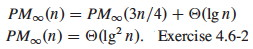
Given 1/4 ≤ α ≤ 3/4 for the unknown dividing of the second array, the work recurrence turns out to be:
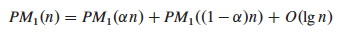
With some more work, PM1(n) = Θ(n) is derived. Thus the parallelism is Θ(n / lg2_n_)
Some adjustment to the MERGE-SORT' code is needed to use this P-MERGE; see
the text. Further analysis shows that the work for the new sort, P-MERGE-
SORT, is PMS1(n lg n) = Θ(n), and the span PMS∞(n) = Θ(lg3_n). This
gives parallelism of Θ(_n / lg2_n), which is much better than Θ(lg _n) in
terms of the potential use of additional processors as n grows.
The chapter ends with a comment on coarsening the parallelism by using an
ordinary serial sort once the lists get small. One might consider whether P
-MERGE-SORT is still a stable sort, and choose the serial sort to retain this
property if it is desirable.
Dan Suthers Last modified: Mon Jan 13 19:12:02 HST 2014
Images are from the instructor’s material for Cormen et al. Introduction to
Algorithms, Third Edition.